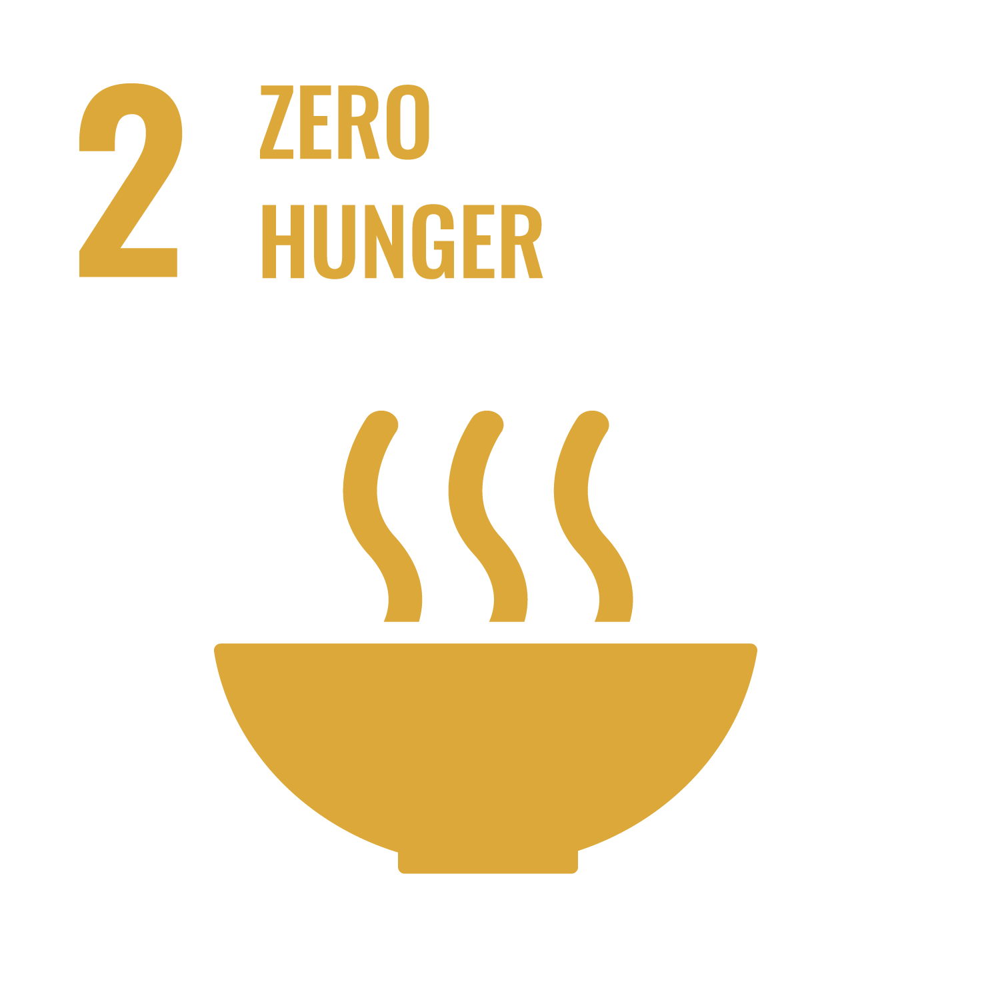

What is SDG 2?

Sustainable Development Goal 2 (SDG 2) aims to end hunger, achieve food security and improved nutrition, and promote sustainable agriculture by 2030. It is part of the United Nations' 2030 Agenda for Sustainable Development, adopted in 2015. In addition to addressing hunger and nutrition, SDG 2 emphasizes the importance of sustainable agriculture. Sustainable practices to produce food help to increase productivity while maintaining ecosystems.
What are the goals of SDG 2?
- End Hunger - Ensure that all people have sufficient food all year-round.
- End All Forms of Malnutrition - Address the nutritional needs of all people.
- Improvements to Agriculture - Ensure that agricultural practices are sustainable.
Education
Education plays an important role in achieving Sustainable Development Goal 2 (SDG 2). By raising awareness about food security and nutrition, we can teach individuals and communities to make informed choices. Below are some steps that can be taken to educate more about SDG 2:
- Community Workshops: Interactive sessions focused on nutrition, gardening, and food sustainability.
- School Programs: Integrating food education into school curricula to foster early awareness.
- Online Courses: Offering virtual classes on sustainable agriculture and food systems.
- Resource Centers: Establishing local hubs for educational materials and guidance on food security.